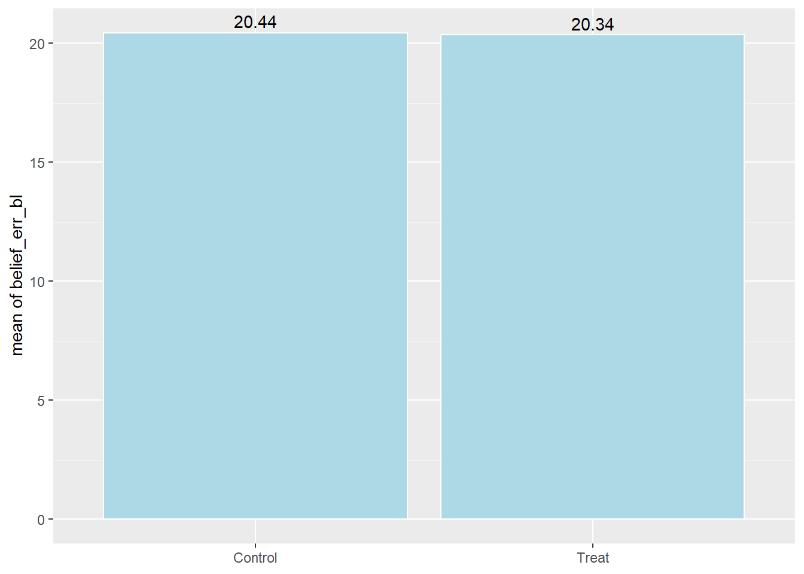
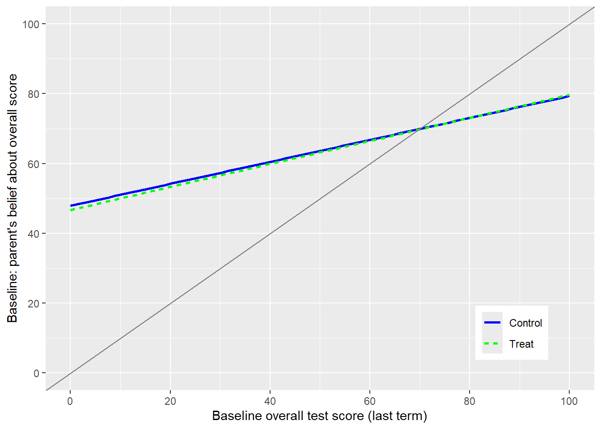

# Title: Econometrics Lab 3: RCT Replication in R
# Author: [INSERT NAME]
# Date: [INSERT DATE]
# ============================================================================ #
# Load libraries
library("haven")
library("dplyr")
library("ggplot2")
library("sandwich") # robust and clustered standard errors
library("lmtest") # coeftest(): regression output with robust SEs
library("broom") # used by the table helper functions
library("knitr") # used by the table helper functions
# Clear all objects from the R environment
rm(list = ls())
# Set working directory
setwd("[INSERT FILE PATH]/EC3301/Lab 3")
# ============================================================================ #
# Open data
dr19_dta <- read_dta("dizonross2019.dta") %>% zap_labels()
# zap_labels() turns Stata value labels into plain numbers
# It can be removed. You may get a warning when using fixest about labelled data
## Create between-sibling score gap:
dr19_dta <- dr19_dta %>%
group_by(hhid) %>%
arrange(child, .by_group = TRUE) %>%
mutate(ave_12 = first(score_ave) - nth(score_ave, 2)) %>%
ungroup()
# creates a variable equal to difference between first and second childs score in each household
# ============================================================================ #
# Table helper functions (copy from the box below)
# ============================================================================ #
# Assignment
# ============================================================================ #
# Graphical analysis
# ============================================================================ #
# ATE
# ============================================================================ #
# Regression adjustment
# ============================================================================ #
# Interacted model
# ============================================================================ #
# HeterogeneityEconometrics Lab 3
RCT Replication in R
During this lab we will attempt to replicate some of the results in Dizon-Ross (2019). The data you have been provided does not need much cleaning. However, you may not get the exact same results as those shown in the paper because some variables are missing and there are small sample size differences. For the most part, your results should be very similar.
Context
This RCT was used as an example in Lecture 6.
Setting: primary schools in Machinga and Balaka districts, Malawi, in 2012. Primary school is technically free but still costly: parents spend about 1,750 MWK (US$10.6) per child per year. Schools must send report cards home each term, but 60% of parents say they don’t know their child’s performance from the last report, because the card never arrived or they couldn’t understand it.
Sample: The sampling frame includes households with at least two children in grades 2–6, with two children randomly chosen per household. Of 3,451 sampled households, 2,634 were eligible and surveyed, giving 5,268 parent–child pairs.
Randomization: households were randomly split half into treatment and half into control. Randomization was stratified on the between-sibling score gap and the estimated literacy rate in the household’s village, a proxy for parental education. Half of the treatment group also received more detailed skills information, but the paper pools all treated households and finds no separate effect.
Intervention: surveyors visited every household and ran a baseline survey on spending and beliefs about each child’s scores. In the same visit, treatment parents were walked through an easy-to-read report card for each child, showing math, English, Chichewa and overall scores, grades and class rank.
Outcomes: an endline survey immediately after the visit measured updated beliefs, the free workbook level chosen and willingness to pay for remedial textbooks. Longer-run outcomes came from school attendance records in the following month and a second endline survey about a year later, covering enrolment and spending, for a random subset of about 900 households.
Setup
On Moodle, under “Week 8”, you find the “Lab 3 Data” folder.
Create a folder on OneDrive (or your H drive) for “Lab 3”
Download the paper, store it in this folder, and open it on your computer. You will need to reference the various tables and figures.
Download the “dizonross2019.dta” file and store it in this folder.
Open RStudio and create a new R script. Save it as “Lab 3/lab-3.R”
Add the following to your R script; editing the file path to match your folder structure.
Missing packages
In this lab you will make tables of summary statistics and regression output; just as you see in the paper. This is an important skill needed for the project. Most researchers use user-written packages like modelsummary or stargazer to do this. Unfortunately, these cannot be installed in the AppsAnywhere version of R.
There is also a popular regression model package called fixest which is used to estimate models with fixed effects. We will get around this, but treating estimating fixed effects using the standard dummy variable approach.
If you are working on your own computer, consider following the alternative code suggestions shown in the green blocks.
TipUsing modelsummary and fixest (own computer only)
If you are working on your own computer, you can install two packages that make tables and regressions easier. They are not available on the university server, so everything in this lab can be done without them.
install.packages(c("fixest", "modelsummary")) # only needed once
library("fixest") # feols(): regressions with robust/clustered SEs and absorbed FEs
library("modelsummary") # modelsummary(): regression tables; datasummary_balance(): balance tables
# Settings used in the modelsummary tables below
stars <- c("*" = .1, "**" = .05, "***" = .01)
gof <- c("nobs", "r.squared")Load these after rm(list = ls()), or the stars and gof settings will be deleted. Look for similar boxes throughout the lab.
As a substitute, you can use the following AI-written functions to create the tables using R’s knitr and broom packages.
balance_table(data, vars): means by treatment group, the difference, and the \(p\)-value of a \(t\)-test (replacesdtable, by(treat, tests))reg_table(models, types, keep): places regression results side-by-side (replacesetable)
Table helper functions (click to show, then copy into your script)
# Variance matrix for a fitted lm, mirroring Stata's vce() options.
# "classical" = Stata default; "HC1" = vce(robust); "HC2" = vce(hc2);
# "cluster" = vce(cluster hhid)
get_vcov <- function(m, type = "classical") {
if (type == "classical") return(vcov(m))
if (type == "cluster") return(vcovCL(m, cluster = ~hhid, type = "HC1"))
vcovHC(m, type = type)
}
# Coefficient table with the chosen SEs. For clustered SEs, p-values use G-1
# degrees of freedom, as Stata does.
coef_table <- function(m, type = "classical") {
df <- if (type == "cluster") {
length(unique(expand.model.frame(m, ~hhid)$hhid)) - 1 # number of clusters - 1
} else {
m$df.residual
}
tidy(coeftest(m, vcov. = get_vcov(m, type), df = df))
}
# Side-by-side regression table (replaces etable).
# models: named list of lm objects
# types: one SE type per model (recycled if length 1)
# keep: terms to show (NULL = all except intercept and grade/school dummies)
reg_table <- function(models, types = "classical", keep = NULL, digits = 4) {
types <- rep(types, length.out = length(models))
stars <- function(p) ifelse(p < .01, "***", ifelse(p < .05, "**", ifelse(p < .1, "*", "")))
tabs <- Map(coef_table, models, types)
terms <- if (is.null(keep)) {
unique(unlist(lapply(tabs, `[[`, "term")))
} else keep
terms <- terms[!grepl("Intercept|factor\\(grade\\)|factor\\(school\\)", terms)]
rows <- lapply(terms, function(t) {
b <- sapply(tabs, function(x) { r <- x[x$term == t, ]
if (nrow(r)) paste0(formatC(r$estimate, digits, format = "f"), stars(r$p.value)) else "" })
se <- sapply(tabs, function(x) { r <- x[x$term == t, ]
if (nrow(r)) paste0("(", formatC(r$std.error, digits, format = "f"), ")") else "" })
rbind(c(t, b), c("", se))
})
out <- do.call(rbind, rows)
out <- rbind(out,
c("N", sapply(models, nobs)),
c("R2", sapply(models, function(m) formatC(summary(m)$r.squared, 3, format = "f"))),
c("SE", types))
colnames(out) <- c("", names(models))
print(kable(out, align = c("l", rep("c", length(models)))))
cat("* p<0.10, ** p<0.05, *** p<0.01. Standard errors in parentheses.\n")
}
# Balance table (replaces dtable, by(treat, tests)): means by group,
# difference, and p-value from an equal-variance t-test (same as reg x treat).
balance_table <- function(data, vars, by = "treat", digits = 3) {
out <- t(sapply(vars, function(v) {
x <- data[[v]]; g <- data[[by]]
tt <- t.test(x ~ g, var.equal = FALSE)
c(Control = mean(x[g == 0], na.rm = TRUE),
Treatment = mean(x[g == 1], na.rm = TRUE),
Difference = mean(x[g == 1], na.rm = TRUE) - mean(x[g == 0], na.rm = TRUE),
p.value = tt$p.value,
N = sum(!is.na(x)))
}))
print(kable(out, digits = digits))
}Replication
Assignment
We begin by understanding assignment and validating randomization. The main variable of interest is the dummy variable treat, which =1 for the treated households.
Use the functions
length()andunique()to figure out how many unique schools there are.Use the code below to figure out if there are any households that appear more than twice in the data.
dr19_dta %>%
count(hhid, name = "copies") %>%
count(copies, name = "households")- Create a frequency table of the treatment indicator
treat. Is this an efficient experiment design?
Next, we will try to replicate some of the lines in Table 1 (the balance table).
We will begin by replicating some of the lines under “Panel A. Respondent background.” These are background characteristics of the parent who responded to the survey.
- Use the
balance_table()helper function. The first argument is the data frame; the second is a list of the variables you want to compare across treatment groups.
- Use the
balance_table(dr19_dta, c("resp_female", "resp_decides", "resp_age", "resp_secondary"))Your results should replicate:
| | Control| Treatment| Difference| p.value| N|
|:--------------|-------:|---------:|----------:|-------:|----:|
|resp_female | 0.774| 0.759| -0.015| 0.200| 5268|
|resp_decides | 0.915| 0.925| 0.010| 0.185| 5240|
|resp_age | 40.645| 40.974| 0.329| 0.299| 4812|
|resp_secondary | 0.107| 0.112| 0.004| 0.617| 5230|Follow the same steps replicating lines from “Panel C. Student information” for variables
grade,child_age,child_female, andattend_bl.Does the evidence support the researchers claim that assignment into treatment is balanced (p. 2744)?
TipUsing modelsummary
datasummary_balance() creates a balance table in one line. The formula ~treat defines the groups, and select() picks the variables to compare.
datasummary_balance(~treat,
data = select(dr19_dta, treat, resp_female, resp_decides, resp_age, resp_secondary),
dinm_statistic = "p.value", fmt = 3)The \(p\)-values come from an unequal-variance (Welch) \(t\)-test, which should match balance_table().
Graphical analysis
In this section we are going to attempt to replicate Figure 3.
Replicate Panel A.
- First, compute the mean of
belief_err_blfor each treatment group, as we did in Lab 1. - Then plot the means using
geom_col(), and add the bar heights as labels withgeom_text().
- First, compute the mean of
means <- dr19_dta %>%
mutate(treat = factor(treat, labels = c("Control", "Treat"))) %>%
group_by(treat) %>%
summarise(mean_err = mean(belief_err_bl, na.rm = TRUE), .groups = "drop")
ggplot(means, aes(x = treat, y = mean_err)) +
geom_col(fill = "lightblue", color = "white") +
geom_text(aes(label = round(mean_err, 2)), vjust = -0.4) +
labs(x = NULL, y = "mean of belief_err_bl")Your results should replicate:

Replicate Panel C. Follow the same steps as above, but use
belief_err_endinstead.To replicate Panel B, we won’t try to estimate the flexible functions shown in the paper. Instead, we will use
geom_smooth(method = "lm")to fit a linear line betweenbelief_blandscore_avefor both the treated and control groups, andgeom_abline()to add the 45-degree line. Here is my version.
Warning: Removed 12 rows containing non-finite outside the scale range
(`stat_smooth()`).
NoteHint
Mapping colour (and linetype) to factor(treat) inside aes() tells ggplot() to draw a separate line for each treatment group.
ggplot(dr19_dta, aes(x = score_ave, y = belief_bl, colour = factor(treat))) +
geom_smooth(method = "lm", formula = y ~ x, se = FALSE) +
geom_abline(intercept = 0, slope = 1, colour = "grey50")- Replicate Panel D using similar steps. The lines should have a similar slope.
Warning
Don’t forget to store a copy of your code in the R script.
ATE
One of the main outcomes in the study is belief_end: which captures the parents’ beliefs about their children’s performances after the intervention.
Test whether there is a statistically significant difference between the mean of
belief_endacross treatment groups. To do so, we will first use R’st.test()function.- The formula
belief_end ~ treatcompares the mean ofbelief_endacross the two groups defined bytreat. - The option
var.equal = TRUEassumes equal variances in the two groups (as Stata’sttestdoes by default).
- The formula
t.test(belief_end ~ treat, data = dr19_dta, var.equal = TRUE)Your results should replicate:
Two Sample t-test
data: belief_end by treat
t = 14.885, df = 5242, p-value < 2.2e-16
alternative hypothesis: true difference in means between group 0 and group 1 is not equal to 0
95 percent confidence interval:
6.444300 8.399272
sample estimates:
mean in group 0 mean in group 1
63.56283 56.14105 Now, run the same test without the
var.equal = TRUEoption. R then allows for unequal variances (Welch’s test). This should compute the Neyman variance estimator.Replicate these results by estimating a linear regression with
lm(). The default estimated SE should replicate that from Q1.Estimate the same simple regression with robust SEs: HC1 (Stata’s
vce(robust)) and HC2 (Stata’svce(hc2)). These two should be very similar, since treatment is close to 50-50.
model_ate <- lm(belief_end ~ treat, data = dr19_dta)
coeftest(model_ate, vcov. = vcovHC(model_ate, type = "HC1"))vcovHC() (from sandwich) computes the robust variance matrix, and coeftest() (from lmtest) reports the regression results using it.
TipUsing fixest
feols() from fixest works like lm(), but lets you choose the SEs directly. vcov = "hetero" gives HC1 SEs, the same as Stata’s vce(robust). fixest does not offer HC2, so use coeftest() for that.
summary(feols(belief_end ~ treat, data = dr19_dta, vcov = "hetero"))Regression adjustment
Now we can replicate some of the regression tables.
- The variables
wb_mathandwb_engltake on values \(\{-1,0,1\}\). Recode these values to \(\{0,100,200\}\). You can either usecase_when()or a simple formula.
dr19_dta <- dr19_dta %>%
mutate(wb_math = case_when(wb_math == -1 ~ 0,
wb_math == 0 ~ 100,
wb_math == 1 ~ 200))
## or
# dr19_dta <- dr19_dta %>%
# mutate(wb_math = (wb_math + 1) * 100)- Estimate the first model from Panel A. of Table A.1 (p. 2759), including the following controls and estimating robust SEs.
factor(grade)adds a dummy variable for each grade (Stata’si.grade).
model1 <- lm(belief_end ~ treat + par_educ + resp_female + resp_literate + ave_12 + score_ave + child_female + factor(grade),
data = dr19_dta)
coeftest(model1, vcov. = vcovHC(model1, type = "HC1"))
t test of coefficients:
Estimate Std. Error t value Pr(>|t|)
(Intercept) 36.3497242 0.9783687 37.1534 < 2.2e-16 ***
treat -7.1489407 0.4366317 -16.3729 < 2.2e-16 ***
par_educ 0.1163938 0.0791685 1.4702 0.141569
resp_female -0.2481120 0.5169411 -0.4800 0.631276
resp_literate 0.7500940 0.6019915 1.2460 0.212815
ave_12 -0.0097040 0.0095037 -1.0211 0.307270
score_ave 0.5004139 0.0132683 37.7149 < 2.2e-16 ***
child_female 0.2260491 0.4377077 0.5164 0.605571
factor(grade)3 2.0894901 0.6729043 3.1052 0.001912 **
factor(grade)4 3.4658344 0.6434589 5.3863 7.523e-08 ***
factor(grade)5 4.6173883 0.6733241 6.8576 7.850e-12 ***
factor(grade)6 5.6380015 0.7078316 7.9652 2.026e-15 ***
---
Signif. codes: 0 '***' 0.001 '**' 0.01 '*' 0.05 '.' 0.1 ' ' 1Next we will try to estimate the remaining models and create a table.
- Estimate each model and store the results as follows. Assigning the model to a name (
model1 <- lm(...)) stores the results without printing them.
- Estimate each model and store the results as follows. Assigning the model to a name (
model1 <- lm(belief_end ~ treat + par_educ + resp_female + resp_literate + ave_12 + score_ave + child_female + factor(grade),
data = dr19_dta)For each additional model, you need to change the name of the stored results:
model1,model2, etc.Use the following code to make a table:
reg_table(list(belief_end = model1, wb_math = model2, wb_engl = model3,
lnwtp_math_engl = model4, enrolled = model5,
ln_educ_exp_end = model6, attend_admin = model7),
types = "HC1", keep = "treat")
# list() collects the models; the names become the column headings
# types = "HC1" computes robust SEs (Stata's vce(robust)) for every model
# keep = "treat" only displays the coefficient on treat
TipUsing fixest and modelsummary
Estimate each model with feols(), collect them in a list(), and pass the list to modelsummary().
models <- list(
belief_end = feols(belief_end ~ treat + par_educ + resp_female + resp_literate + ave_12 + score_ave + child_female + factor(grade),
data = dr19_dta, vcov = "hetero"),
wb_math = feols(wb_math ~ treat + par_educ + resp_female + resp_literate + ave_12 + score_ave + child_female + factor(grade),
data = dr19_dta, vcov = "hetero")
# ... add the remaining five models here
)
modelsummary(models, coef_map = "treat", stars = stars, gof_map = gof, fmt = 4)
# coef_map = "treat" only displays the coefficient on treat
# stars and gof are the settings defined at the start of the labThe following information is provided in the tables notes of Table A.1
“Standard errors are clustered at the household level. Regressions control for school FE, average parental years of education, parent gender, a parental education proxy used for stratification, the between-child score gap, child baseline performance, child gender, grade FE, and the baseline value of the dependent variable (baseline value not available for enrollment or experimental outcomes).”
- Evidently, the model specifications in Q.3 do not perfectly match those in the paper. We are missing school fixed effects (FE), have replaced “a parental education proxy used for stratification” with
resp_literate. Addfactor(school)to the model to include school FEs. Does it make a difference to either the estimated coefficient or SE?
model_fe <- lm(belief_end ~ treat + par_educ + resp_female + resp_literate + ave_12 + score_ave + child_female + factor(grade) + factor(school),
data = dr19_dta)
coeftest(model_fe, vcov. = vcovHC(model_fe, type = "HC1"))["treat", ]
# ["treat", ] displays only the row for treat, instead of all 39 school dummies- The authors do not estimate heteroskedastic-robust SEs. Instead, the estimate SEs that are cluster-robust, where the cluster variable is the household. This is because there are two children in the data for every household. We can do this using
vcovCL()(Stata’svce(cluster hhid)).
coeftest(model_fe, vcov. = vcovCL(model_fe, cluster = ~hhid))["treat", ]
TipUsing fixest
When there is a large number of FEs (as here), it makes sense to use a slightly different estimator that “absorbs” them, like Stata’s areg. In feols(), list the FEs after |. The estimate of treat is identical to adding factor(school).
feols(belief_end ~ treat + par_educ + resp_female + resp_literate + ave_12 + score_ave + child_female + factor(grade) | school,
data = dr19_dta, vcov = "hetero")
feols(belief_end ~ treat + par_educ + resp_female + resp_literate + ave_12 + score_ave + child_female + factor(grade) | school,
data = dr19_dta, cluster = ~hhid)Be careful: when the model includes FEs, feols() clusters the SEs by the FE variable unless you say otherwise.
- Create the following table and comment on whether the various regression adjustments and SE estimates have a big impact on the estimated ATE.
model1 <- lm(belief_end ~ treat,
data = dr19_dta)
model2 <- lm(belief_end ~ treat + par_educ + resp_female + resp_literate + ave_12 + score_ave + child_female + factor(grade),
data = dr19_dta)
model3 <- lm(belief_end ~ treat + par_educ + resp_female + resp_literate + ave_12 + score_ave + child_female + factor(grade) + factor(school),
data = dr19_dta)
model4 <- lm(belief_end ~ treat + par_educ + resp_female + resp_literate + ave_12 + score_ave + child_female + factor(grade) + factor(school),
data = dr19_dta)
reg_table(list("(1)" = model1, "(2)" = model2, "(3)" = model3, "(4)" = model4),
types = c("HC1", "HC1", "HC1", "cluster"), keep = "treat")
# models 3 and 4 are the same regression; only the SEs differ
TipUsing fixest and modelsummary
models <- list(
"(1)" = feols(belief_end ~ treat,
data = dr19_dta, vcov = "hetero"),
"(2)" = feols(belief_end ~ treat + par_educ + resp_female + resp_literate + ave_12 + score_ave + child_female + factor(grade),
data = dr19_dta, vcov = "hetero"),
"(3)" = feols(belief_end ~ treat + par_educ + resp_female + resp_literate + ave_12 + score_ave + child_female + factor(grade) | school,
data = dr19_dta, vcov = "hetero"),
"(4)" = feols(belief_end ~ treat + par_educ + resp_female + resp_literate + ave_12 + score_ave + child_female + factor(grade) | school,
data = dr19_dta, cluster = ~hhid))
modelsummary(models, coef_map = "treat", stars = stars, gof_map = gof, fmt = 4)Interacted model
In the paper, the authors focus on a model that interacts the treatment with baseline academic achievement (see p. 2747). The results are shown in Table 2.
\[ y_{ij} = c_o + c_1A_{ij}\times Treat_i + c_2A_{ij} + c_3Treat_i + c_4'X_{ij} + \varepsilon_{ij} \]
- Here is an example of how to estimate this model for the outcome
belief_end. Here I am excluding the FEs and estimating heteroskedastic-robust SEs.
model1 <- lm(belief_end ~ treat * score_ave + par_educ + resp_literate + ave_12 + child_female + factor(grade) + resp_female,
data = dr19_dta)
coeftest(model1, vcov. = vcovHC(model1, type = "HC1"))
# treat * score_ave includes treat, score_ave, and their interaction treat:score_ave
# (Stata's i.treat##c.score_ave)- Create a table that replicates the results of columns (1)-(4) in Table 2. As above, you can exclude school FEs and estimate heteroskedastic-robust SEs. Try to replicate the following output.
| | belief_end | wb_math | wb_engl | lnwtp_math_engl |
|:---------------|:-----------:|:-----------:|:-----------:|:---------------:|
|treat | -26.1951*** | -86.7123*** | -73.1391*** | 0.1747 |
| | (1.2344) | (5.4125) | (5.3810) | (0.1120) |
|treat:score_ave | 0.4087*** | 1.1790*** | 1.2943*** | -0.0006 |
| | (0.0240) | (0.1051) | (0.1069) | (0.0023) |
|score_ave | 0.2967*** | 0.8436*** | 0.8870*** | 0.0032** |
| | (0.0179) | (0.0770) | (0.0829) | (0.0015) |
|N | 5026 | 5020 | 5020 | 5001 |
|R2 | 0.327 | 0.183 | 0.181 | 0.011 |
|SE | HC1 | HC1 | HC1 | HC1 |
* p<0.10, ** p<0.05, *** p<0.01. Standard errors in parentheses.
TipUsing modelsummary
Use keep = c("treat", "treat:score_ave", "score_ave") in reg_table() to display only these three coefficients. With modelsummary(), use the same list in coef_map =.
- Now try to replicate Panel A. Continuous versions from Table 3 (which focuses on non-experimental outcomes).
| | enrolled | ln_educ_exp_end | attend_admin |
|:---------------|:----------:|:---------------:|:------------:|
|treat | -5.3591*** | -0.0113 | -0.3200 |
| | (2.0636) | (0.1226) | (2.6262) |
|treat:score_ave | 0.1046*** | 0.0004 | 0.0035 |
| | (0.0370) | (0.0024) | (0.0488) |
|score_ave | -0.0104 | 0.0053*** | 0.1049*** |
| | (0.0225) | (0.0017) | (0.0358) |
|N | 1730 | 1654 | 1778 |
|R2 | 0.024 | 0.111 | 0.029 |
|SE | HC1 | HC1 | HC1 |
* p<0.10, ** p<0.05, *** p<0.01. Standard errors in parentheses.- To replicate Panel B. Binary versions you first need to create a variable that is a dummy variable called
above_median: =1 ifscore_aveis above the sample median and =0 otherwise. Try to do this, and then estimate a model that interactstreatwithabove_median:treat * above_median. Your results should look like.
| | enrolled | ln_educ_exp_end | attend_admin |
|:------------------|:---------:|:---------------:|:------------:|
|treat | -2.1774** | -0.0121 | -0.2224 |
| | (1.1093) | (0.0610) | (1.2568) |
|treat:above_median | 3.4931** | 0.0369 | -0.0299 |
| | (1.4208) | (0.0862) | (1.5648) |
|above_median | -0.3868 | 0.1579** | 3.2872*** |
| | (1.0089) | (0.0622) | (1.1153) |
|N | 1730 | 1654 | 1778 |
|R2 | 0.023 | 0.109 | 0.026 |
|SE | HC1 | HC1 | HC1 |
* p<0.10, ** p<0.05, *** p<0.01. Standard errors in parentheses.
NoteUsing median
Use median() to compute the median of score_ave (remember na.rm = TRUE), and then if_else() inside mutate() to create the dummy variable, as we did for ln_income in Lab 2.
Heterogeneity
Heterogeneity is a crucial step in any paper where the researcher tests to see whether the treatment effect varies with certain characteristics of the sample. Here, the author focuses on parental education.
- As a final exercise try to replicate the results shown in Panel B. Heterogeneity in the treatment effect on the slope, by parent education, for selected experimental outcomes of Table 4.
NoteInteractions
A triple interaction, treat * score_ave * par_educ, includes all three variables, all three two-way interactions, and the three-way interaction. For the workbook outcomes, use the subject-specific scores score_math and score_engl instead of score_ave.
Replicate
Check that all the code you executed is in the .R file.
Make sure your .R file is saved.
Run the whole .R file to check that the results replicate.
References
Dizon-Ross, Rebecca. 2019. “Parents’ Beliefs about Their Children’s Academic Ability: Implications for Educational Investments.” American Economic Review 109 (8): 2728–65.